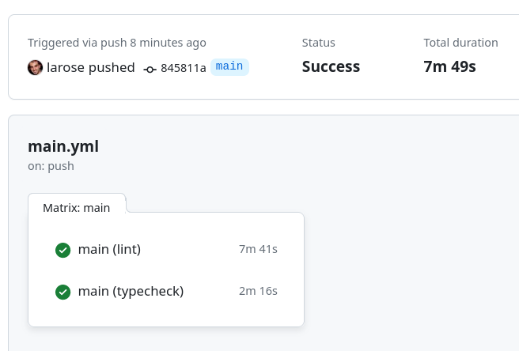
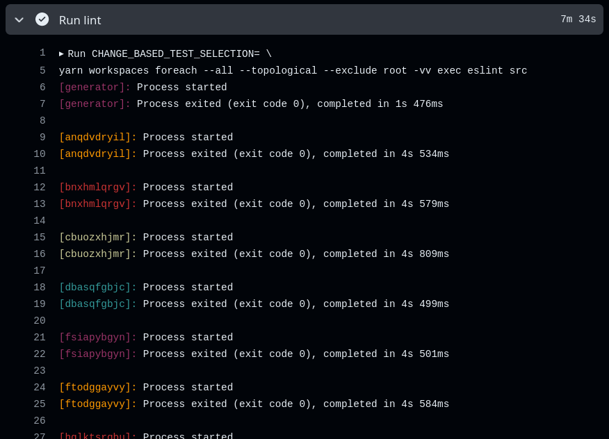
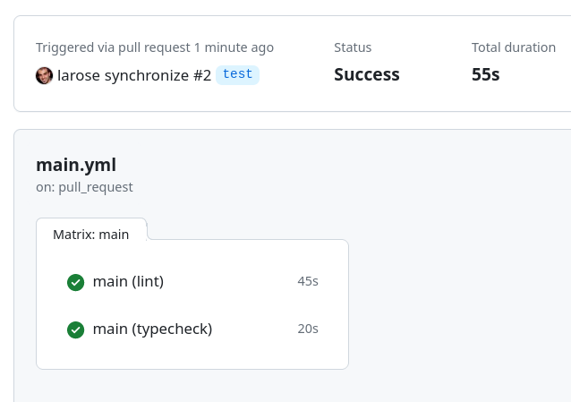
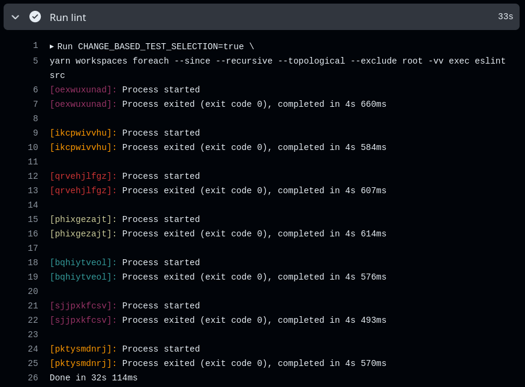

Speed Up Your CI/CD Pipeline with Change-Based Testing in a Yarn-Based Monorepo
May 2024
Monorepos offer a centralized location for all your project's codebases, simplifying management. However, this convenience comes with a challenge: CI/CD pipelines often struggle with large monorepos, leading to lengthy pull request run times due to full test suite execution. This can significantly hinder developer workflow and productivity.
Change-based testing is an optimization technique specifically designed to address this challenge in monorepos. It focuses on streamlining pull request workflows in large codebases by strategically running tests only on the specific changes introduced in a pull request, rather than the entire codebase. This approach significantly reduces pull request run times, allowing developers to iterate faster.
Imagine modifying a single package within your monorepo. Change-based testing ensures that only the tests for that package, and any dependent packages that might be affected by your changes, are executed. This targeted approach dramatically reduces test execution time.
Implementation: A GitHub Actions Example
We'll showcase how to implement change-based testing in a Yarn-based monorepo using GitHub Actions. While the specifics are tailored to this platform, the fundamental concepts can be adapted for other CI/CD tools like GitLab CI/CD.
Demo Project Overview
The demo monorepo yarn-monorepo-change-based-testing-demo uses Yarn for package management. It simulates a codebase with 100 randomly generated TypeScript packages within the packages directory. Each package can have dependencies on other packages within the monorepo. We'll focus on two checks: linting with ESLint and type checking with the TypeScript compiler (tsc).
Main Workflow Breakdown
The workflow, named main, is triggered by two events:
- Pull requests targeting the
mainbranch. - Direct pushes to the
mainbranch (after a pull request is merged).
The workflow has a single job that uses a matrix strategy to run concurrent child jobs for linting and type checking.
name: Main
on:
pull_request:
branches:
- main
push:
branches:
- main
jobs:
main:
runs-on: ubuntu-22.04
strategy:
fail-fast: false
matrix:
command: ["lint", "typecheck"]
The first three steps are common setup tasks: installing Node.js, checking out the code, and installing dependencies:
steps:
- name: Setup Node
uses: actions/setup-node@v4
with:
node-version: 20
- name: Checkout
uses: actions/checkout@v4
with:
fetch-depth: 0
- name: Install Dependencies
run: |
corepack enable
yarn install
The key part is how the workflow determines which test mode to use based on the trigger event.
If the workflow is triggered by a pull request, the Set Change-Based Test Selection step sets a variable change-based-test-selection to true. This variable controls the test selection in a subsequent step.
- name: Set Change-Based Test Selection
id: set-test-selection
if: ${{ github.event_name == 'pull_request' }}
run: |
echo "change-based-test-selection=true" >> "$GITHUB_OUTPUT"
Then, the Run ${{ matrix.command }} step (expanded to Run lint and Run typecheck) passes the change-based-test-selection variable to the makefile through the CHANGE_BASED_TEST_SELECTION variable:
- name: Run ${{ matrix.command }}
run: |
CHANGE_BASED_TEST_SELECTION=${{ steps.set-test-selection.outputs.change-based-test-selection }} \
make ${{ matrix.command }}
Here's the makefile:
ifdef CHANGE_BASED_TEST_SELECTION
PACKAGE_SELECTION_FLAG := --since --recursive
else
PACKAGE_SELECTION_FLAG := --all
endif
FOR_EACH_CMD := yarn workspaces foreach $(PACKAGE_SELECTION_FLAG) --topological --exclude root -vv
.PHONY: lint
lint:
$(FOR_EACH_CMD) exec eslint src
.PHONY: typecheck
typecheck:
$(FOR_EACH_CMD) exec tsc --noEmit
The first part sets the PACKAGE_SELECTION_FLAG variable which controls how the yarn workspaces foreach command selects the packages.
If CHANGE_BASED_TEST_SELECTION is defined, PACKAGE_SELECTION_FLAG is set to --since --recursive. This configuration ensures that only the packages with changes compared to the origin/main branch are selected (--since flag), and it recursively includes their dependent packages, their reverse dependencies (--recursive flag).
Otherwise, we select all packages (--all flag).
We then pass the PACKAGE_SELECTION_FLAG to the yarn workspaces foreach command.
Example in Action
Here's the screenshot of a full run:


It took almost 8 minutes.
And here's the screenshot of a run in a pull request where one package was changed, affecting 6 dependent packages (for a total of 7 packages):


It took less than a minute.
Keep in mind, this is a toy monorepo, so reducing test times from 8 minutes to 1 minute may not seem significant. However, in a real-life monorepo, decreasing test times, say, from 45 minutes to under 10 minutes represents a substantial improvement in both developer productivity and CI/CD costs.
Local Development
One of the beauties of using a makefile (or any other script outside the GitHub Actions YAML file) is that you can enjoy the same benefits locally. When calling make lint or make typecheck, simply sets CHANGE_BASED_TEST_SELECTION to any value to experience the speed boost of change-based testing on your local machine:
$ CHANGE_BASED_TEST_SELECTION=true make lint
Conclusion
Change-based testing offers a significant boost for monorepos. By intelligently targeting tests to changed areas, you can streamline pull request workflows and improve developer productivity. Faster pull request runs lead to quicker feedback and a smoother development experience. Additionally, you might see a reduction in CI/CD resource consumption due to fewer tests running.
Like this article? Get notified of new ones: